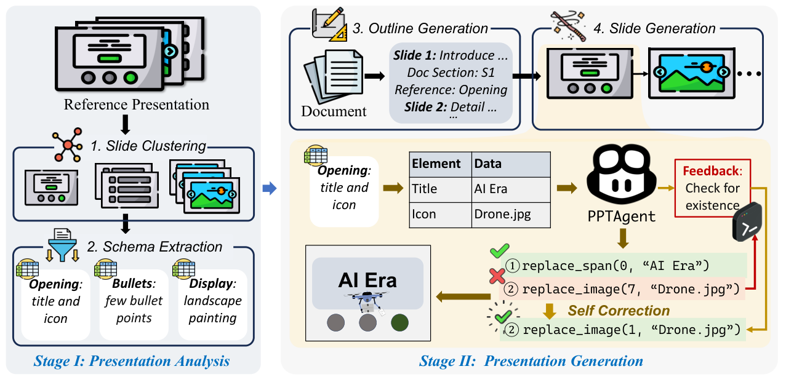
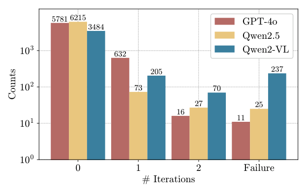
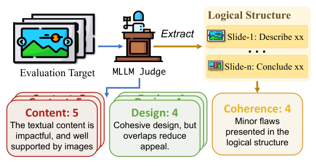
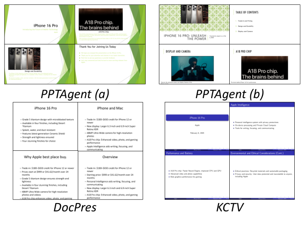
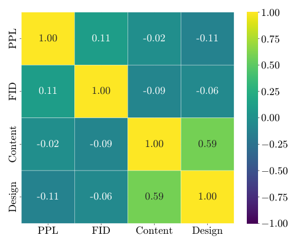

PAPER READING
EMNLP 2025
PPTAGENT: Generating and Evaluating
Presentations Beyond Text-to-Slides
基于编辑范式的演示文稿自动生成与多维评估框架
Hao Zheng*, Xinyan Guan*, Hao Kong, Wenkai Zhang, Jia Zheng†, Weixiang Zhou, Hongyu Lin†, Yaojie Lu†, Xianpei Han, Le Sun
ISCAS & UCAS
EMNLP 2025
Abstract
摘要
Automatically generating presentations from documents is a challenging task that requires accommodating content quality, visual appeal, and structural coherence. Existing methods primarily focus on improving and evaluating the content quality in isolation, overlooking visual appeal and structural coherence, which limits their practical applicability.
本文提出 PPTAGENT，通过受人类工作流启发的两阶段编辑方法全面改进演示文稿生成；同时提出 PPTEVAL，从 Content、Design、Coherence 三维度评估生成质量。实验表明 PPTAGENT 在所有维度上显著优于现有方法。
Introduction
研究背景与挑战
现有方法
Text-to-Slides 范式
- 将生成任务简化为摘要扩展
- 依赖人工定义规则或模板
- 生成内容文本密集、碎片化
- 无法吸引受众注意力
- 仅关注内容质量，忽视设计与连贯性
核心挑战
Edit-based 范式的难点
- 幻灯片功能多样、布局复杂，难以选择参考页
- PowerPoint XML 冗余复杂，LLM 难以稳健编辑
- 缺乏对参考演示文稿结构和风格的理解
- 缺少全面的多维度评估框架
Contributions
主要贡献
01
PPTAGENT
将演示文稿生成重新定义为基于编辑的过程，由参考演示文稿引导，实现两阶段生成框架
02
PPTEVAL
提出三维度综合评估框架：Content、Design、Coherence，基于 MLLM-as-a-Judge 范式
03
Zenodo10K
发布 10,448 份跨领域演示文稿数据集及完整代码，支持未来研究
Method — Overview
PPTAGENT 整体框架

Fig. 2 — PPTAGENT 工作流程：Stage I 分析参考演示文稿；Stage II 基于大纲迭代生成新幻灯片
Method — Stage I
Stage I: Presentation Analysis
Slide Clustering
- 结构型幻灯片：LLM 分析文本特征，标记结构角色（如 Opening）
- 内容型幻灯片：转为图像后层次聚类，MLLM 分析布局模式
- 按功能与布局将幻灯片分为不同类别
Schema Extraction
- 为每类幻灯片提取内容模式（Content Schema）
- 每个元素由 Category + Description + Data 三元组表示
- 为后续内容生成与编辑提供结构化指导
Stage I 将参考演示文稿分解为 功能类别 + 内容模式，为 Stage II 的参考选择与幻灯片生成奠定基础。
Method — Stage II
Outline Generation
STEP 01
理解文档结构
LLM 分析输入文档的结构与可用图像（通过 caption）
→
STEP 02
规划幻灯片大纲
为每张幻灯片定义：目的、文档内容来源、参考幻灯片
→
STEP 03
保证整体连贯
前置规划确保内容上下文适当，提升演示文稿连贯性
大纲生成利用 Stage I 对幻灯片功能的理解，整体规划每张新幻灯片的目的、内容和参考来源，而非逐页独立生成。
Method — Slide Generation
Slide Generation: Edit-based
编辑操作流程
- LLM 在内容模式指导下生成新内容
- 将内容通过 API 编辑操作 迁移到参考幻灯片
- 保留参考幻灯片的布局和风格
- 迭代生成每张幻灯片
核心 API
- replace_span — 替换文本内容
- replace_image — 替换图像
- del_span / del_image — 删除元素
- clone_paragraph — 克隆段落

基于参考幻灯片的编辑操作示意
Method — Code Render & Self-Correction
HTML 渲染与自纠错机制
Code Render（HTML 渲染）
将 PowerPoint 冗余 XML 转为简洁 HTML 表示，降低 LLM 交互复杂度。移除 Code Render 后成功率从 95.0% 降至 74.6%。
Self-Correction（自纠错）
在 Python REPL 中执行编辑代码，捕获运行时错误并反馈给 LLM，迭代修正。GPT-4o 成功率达 97.8%，Qwen2.5 达 95.0%。
HTML 表示使 LLM 更精准地理解幻灯片结构，自纠错机制将总错误从 1,296 降至 273，有效增强生成稳健性。
PPTEVAL
PPTEVAL: 多维度评估框架
C
Content
文本简洁、语法正确，配有相关图像
→
D
Design
配色和谐、布局合理，视觉元素增强吸引力
→
Co
Coherence
结构递进，包含必要背景信息
基于 MLLM-as-a-Judge 范式（GPT-4o），对 Content 和 Design 在幻灯片级别评估，Coherence 在演示文稿级别评估。所有维度采用 1-5 分制，提供数值评分与详细理由。

Fig. 3 — PPTEVAL 三维度评估流程示意
Experiments — Settings
实验设置
模型配置
- GPT-4o + GPT-4o（LM + VM）
- Qwen2.5-72B + Qwen2-VL-72B
- Qwen2-VL-72B（LM + VM）
- 部署于 NVIDIA A100 GPU
- 每张幻灯片最多 2 次自纠错迭代
数据集
- Zenodo10K：10,448 份跨领域 PPT
- 5 领域 × 10 文档 × 10 参考 = 500 任务
基线方法
- DocPres：规则化多阶段生成
- KCTV：模板化 LaTeX 转换
评估指标
- SR — 成功率
- PPL — 文本流畅度（越低越好）
- ROUGE-L — 文本相似度
- FID — 视觉相似度
- PPTEVAL — 三维度评分
Experiments — Main Results
主实验结果
| Method |
LM |
VM |
SR(%) ↑ |
PPL ↓ |
Content ↑ |
Design ↑ |
Coherence ↑ |
Avg. ↑ |
| DocPres |
GPT-4o |
– |
– |
76.42 |
2.98 |
2.33 |
3.24 |
2.85 |
| DocPres |
Qwen2.5 |
– |
– |
100.4 |
2.96 |
2.37 |
3.28 |
2.87 |
| KCTV |
GPT-4o |
– |
80.0 |
68.48 |
2.49 |
2.94 |
3.57 |
3.00 |
| KCTV |
Qwen2.5 |
– |
88.0 |
41.41 |
2.55 |
2.95 |
3.36 |
2.95 |
| PPTAGENT |
GPT-4o |
GPT-4o |
97.8 |
721.54 |
3.25 |
3.24 |
4.39 |
3.62 |
| PPTAGENT |
Qwen2.5 |
Qwen2-VL |
95.0 |
496.62 |
3.28 |
3.27 |
4.48 |
3.67 |
| PPTAGENT |
Qwen2-VL |
Qwen2-VL |
43.0 |
265.08 |
3.13 |
3.34 |
4.07 |
3.51 |
PPTAGENT 在 PPTEVAL 三维度上均显著领先：Design 相比 DocPres 提升 +40.9%，Coherence 相比 KCTV 提升 +36.6%，平均分最高达 3.67。
Experiments — Self-Correction
自纠错机制分析
纠错迭代统计

Fig. 4 — 不同模型生成单张幻灯片所需迭代次数
错误类型分布与演化
| 错误类型 |
Round 0 |
Round 1 |
Round 2 |
| SYNTAX | 14 | 8 | 7 |
| INDEX | 1166 | 347 | 244 |
| INST | 70 | 10 | 8 |
| HALLU | 34 | 20 | 12 |
| FUNCTION | 12 | 3 | 2 |
总错误从 1,296 降至 273。INDEX 错误占比 89.9%，两轮纠错后减少 79%。INST 和 FUNCTION 降幅超 80%。
Experiments — Ablation
消融实验
| Setting |
SR(%) ↑ |
Content ↑ |
Design ↑ |
Coherence ↑ |
Avg. ↑ |
| PPTAGENT (Full) |
95.0 |
3.28 |
3.27 |
4.48 |
3.67 |
| w/o Outline |
91.0 |
3.24 |
3.30 |
3.36 |
3.30 |
| w/o Schema |
78.8 |
3.08 |
3.23 |
4.04 |
3.45 |
| w/o Structure |
92.2 |
3.28 |
3.25 |
3.45 |
3.32 |
| w/o CodeRender |
74.6 |
3.27 |
3.34 |
4.38 |
3.66 |
| Controlled (same template) |
100.0 |
3.21 |
3.60 |
4.27 |
3.69 |
| Human |
– |
4.01 |
3.95 |
4.28 |
4.08 |
CodeRender 对成功率影响最大（95.0% → 74.6%）；Outline 和 Structure 对连贯性至关重要（4.48 → 3.36/3.45）；Schema 显著影响成功率与内容质量。
Experiments — Qualitative
定性比较

Fig. 5 — DocPres、KCTV 与 PPTAGENT 生成效果对比：PPTAGENT 使用不同参考演示文稿可产出风格多样且视觉吸引的幻灯片
Conclusion
总结与展望
核心贡献
- 提出 PPTAGENT：基于编辑的演示文稿生成框架
- 两阶段设计：分析参考 PPT + 迭代编辑生成
- HTML 渲染 + 自纠错机制保障稳健性
- 提出 PPTEVAL：Content-Design-Coherence 三维评估
- 发布 Zenodo10K 数据集，推动领域研究
局限与未来
- Qwen2-VL 作为 LM 时成功率较低（43.0%）
- 自纠错对 SYNTAX 和 HALLU 类错误效果有限
- PPL 指标在编辑范式下适用性存疑
- 未来：更强的开源模型、更精细的编辑 API
- 未来：端到端视觉生成与布局优化
Thank You
PPTAGENT: Generating and Evaluating Presentations Beyond Text-to-Slides
EMNLP 2025
github.com/icip-cas/PPTAgent